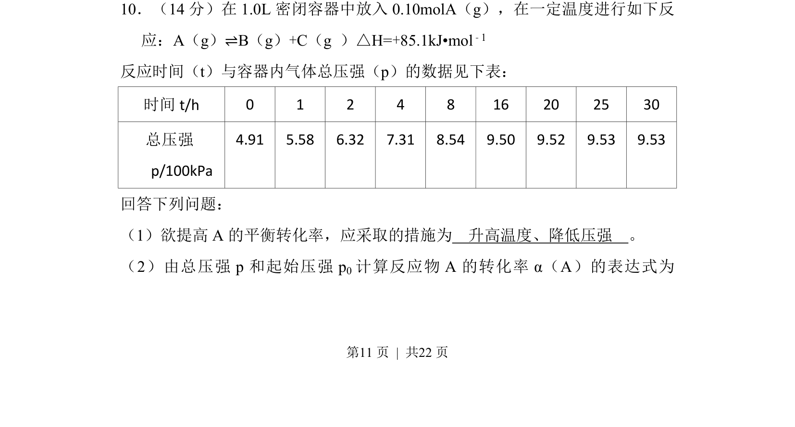
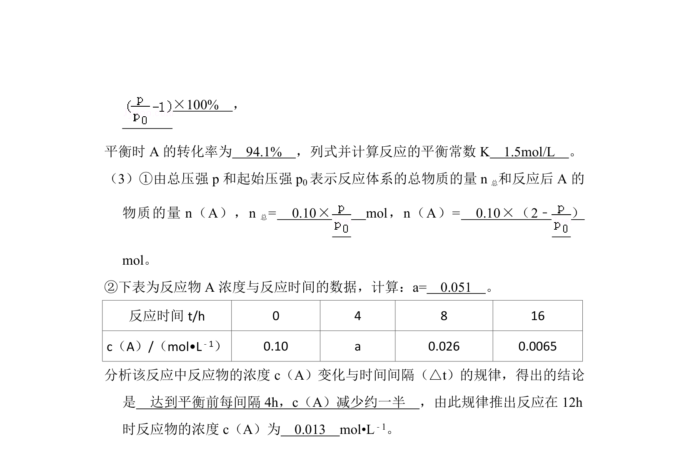
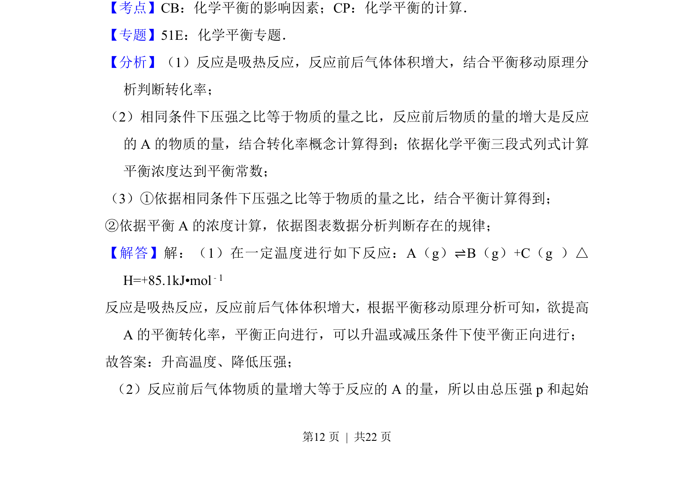
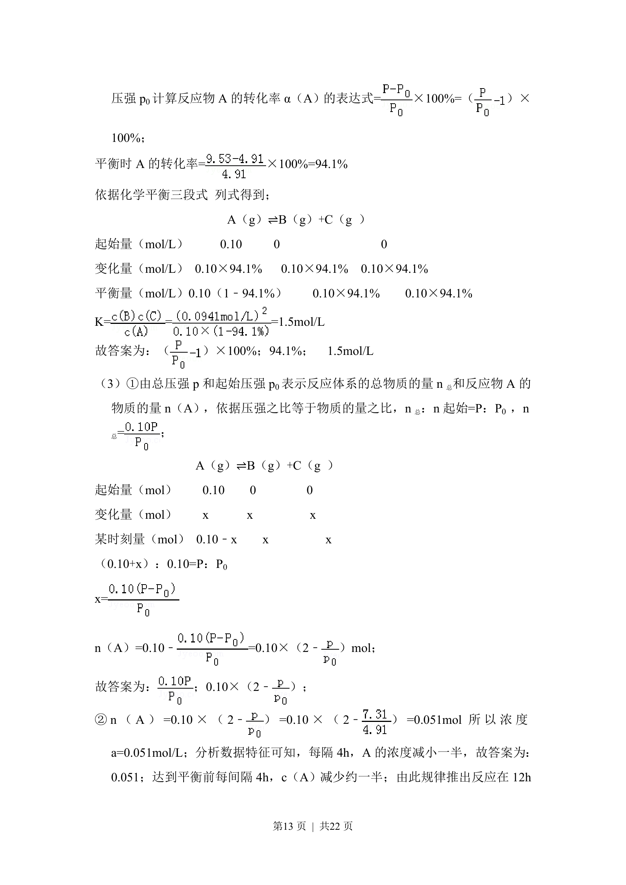
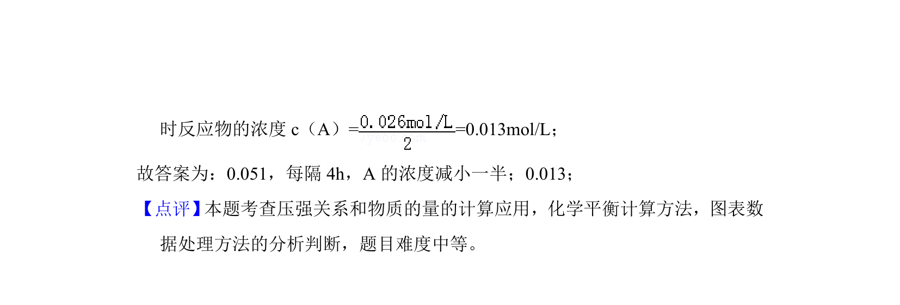

考点：化学平衡 转化率 勒夏特列原理 压强计算


化学平衡计算题，涉及转化率表达式推导及平衡移动影响因素分析。



📄 原 PDF 第 11 页：
素材/真题/吉林/2008-2024·（吉林）化学高考真题/2013年高考化学试卷（新课标Ⅱ）（解析卷）.pdf
10．（14分）在1.0L密闭容器中放入0.10molA（g），在一定温度进行如下反 应：A（g）⇌B（g）+C（g ）△H=+85.1kJ•mol ﹣1 反应时间（t）与容器内气体总压强（p）的数据见下表： 时间t/h 0 1 2 4 8 16 20 25 30 总压强 p/100kPa 4.91 5.58 6.32 7.31 8.54 9.50 9.52 9.53 9.53 回答下列问题： （1）欲提高A的平衡转化率，应采取的措施为 升高温度、降低压强 。 （2）由总压强p和起始压强p 0计算反应物A的转化率α（A）的表达式为